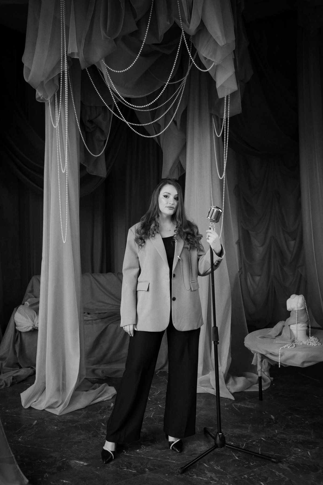

Карина
Скипина
В мюзикле нельзя спрятаться за микрофон. Там надо петь, двигаться и играть одновременно. Это школа, из которой Карина пришла и по которой построена вся Академия.

Эстрадно-джазовый вокал, руководитель ансамбля, артист — Калининградский областной музыкальный колледж. Сейчас — Волгоградская консерватория имени Серебрякова, музыкальное искусство эстрады.
Экс-солистка Ростовского музыкального театра. Экс-солистка джазового квинтета MIX VOICE. Музыкальный педагог мюзиклов «Мульти-Бум», «Мульти-Пульти», «Маша и Витя».
Мюзикл для нас не формат «попробуем поставить спектакль». Это школа, из которой Карина пришла и по которой построена вся Академия: в мюзикле нельзя спрятаться за микрофон, там надо петь, двигаться и играть одновременно.
Импровизация
и джаз
Это то, чего почти нет в городе. Ребёнок перестаёт быть исполнителем чужой записи: он слышит гармонию, понимает, где в песне есть свобода, и может сделать по-своему.
Отсюда берётся то, что слышно сразу: собственный почерк вместо копии оригинала.
Для тех,
кому важны детали
Методическая база и техники
Estill Voice Training, Complete Vocal Technique, фонопедический метод развития голоса.
Методические наработки Ольги Кляйн, Анастасии Балевой, Анастасии Велигуровой, Веры Fox. Курсы IYATS. Джазовая гармония и импровизация.
В работе: дизайн звука, фразировка, динамика, вокальные техники Belting, Cry, Speech, Twang, Sob, мелизматика.